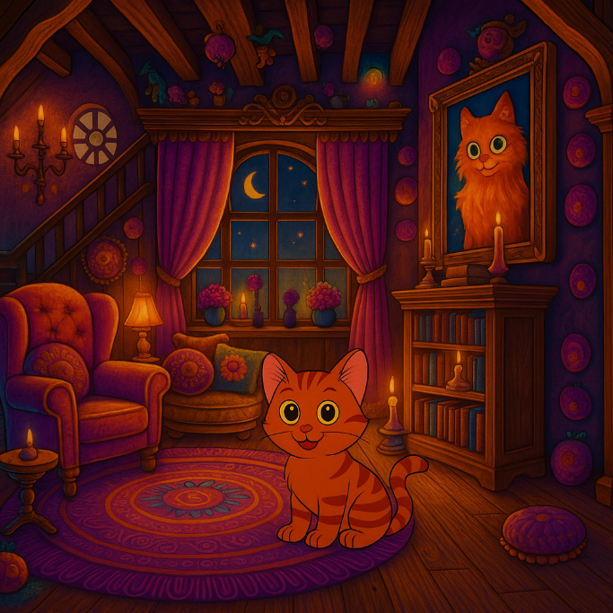

Mouse crept further into the house, his fur bristling. The shimmer behind them pulsed faintly, now sealed off by the thick wooden door that had quietly shut with a soft thunk. The house held its breath, cloaked in shadows and secrets.
We’re not done here, Mouse said quietly. Something wants to be found.
He didn’t have his cape on now. He had left it near the shimmer, hidden under a pile of leaves. It was too heavy for sneaking, and he had a strange feeling that being seen too clearly inside this house might not be wise. Without the cape, Mouse felt lighter, sharper. Every sense was tingling, like the air itself was charged with secrets.
A broken chandelier hung overhead like a crooked crown, and long-forgotten furniture sat cloaked in dust sheets like slumbering ghosts. Mouse padded forward cautiously, his paws silent on the warped wooden floor.
This place gives me the chills, Bat murmured, wings tight against his sides. He fluttered just above Mouse’s head, casting a small shadow that danced along the faded wallpaper. We can still turn around. The shimmer’s still back there. Sort of.
No, Mouse whispered. We came for answers. There’s something in here. Something watching.
As they crept deeper into the house, the air grew colder. A long hallway stretched out before them, lined with portraits that seemed too lifelike. One painting in particular, a woman with piercing green eyes and an unnerving smile, drew Mouse’s gaze. He stared back at her for a moment and could’ve sworn she blinked.
Did you see that, Mouse hissed.
Bat tilted his head. The creepy lady? Yeah. I don’t like her.
Just then, a soft thud echoed from above. Followed by another. And another. Something or someone was moving upstairs.
At the same time, a sweet pungent scent drifted in from the left. Mouse turned toward a darkened doorway. Do you smell that, he asked. It’s herbs. Mugwort and something else. It smells like a potion in progress.
Bat flapped nervously. This is definitely a witch’s house. Or it used to be. Or maybe it still is.
Mouse lowered his body and crouched. The house was offering them two choices and neither one felt safe.